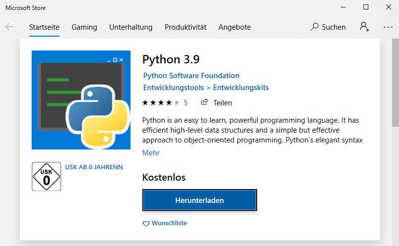
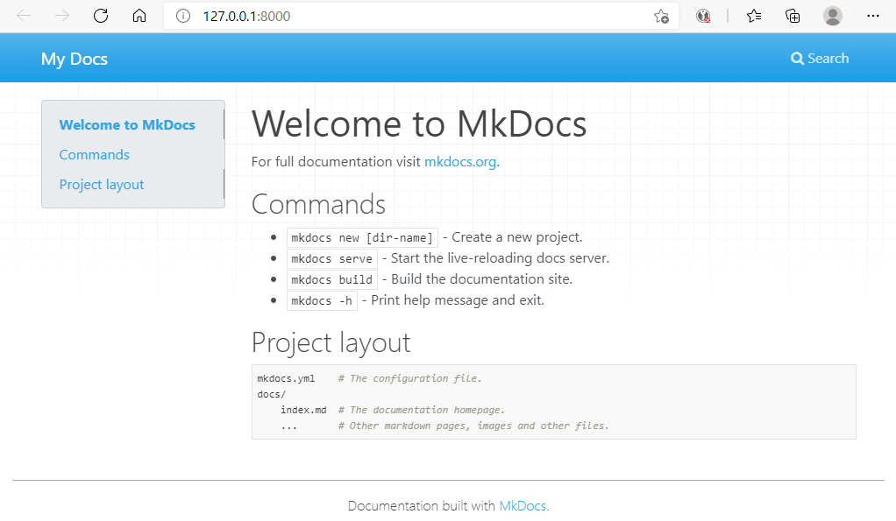
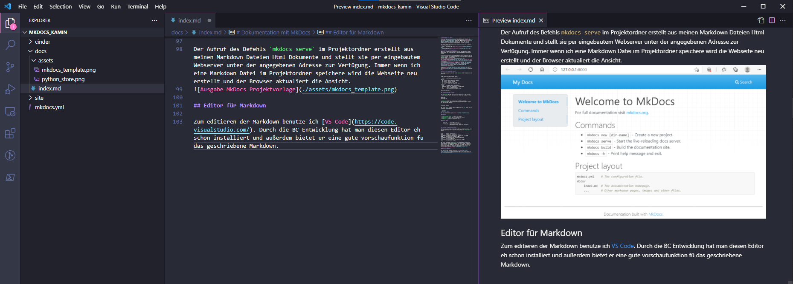

Dokumentation mit MkDocs
MkDocs ist ein Werkzeug zum Erstellen von statischen Webseiten. Der Inhalt der Webseiten wird in Markdown beschrieben. MkDocs generiert daraus das Html zur Anzeige im Webbrowser. Man kann sich das in etwa wie das Kompilieren von Quellcode in ein ausführbares Programm vorstellen.
Wir setzen MkDocs zur Dokumentation von service pro 365 und allgemeiner Entwicklungsthemen ein.
- Hilfe zu service pro 365 https://help.bss-it.de/
- Entwicklungsthemen https://dev.bss-it.de/
Aufbau einer Entwicklungsumgebung
MkDocs ist in Python geschrieben es läuft auf jeder Plattform auf der Python läuft. Für Windows 10 gibt es mehrere wege MkDocs zum Laufen zu bringen:
- Ich installiere eine Python Umgebung direkt unter Windows 10. Dass das nichts exotisches ist, sieht man, wenn man in eine Powershell einfach mal
pythoneingibt. Hat man Python noch nicht intsalliert öffnet sich eine passende Seite im Microsoft Store.  Mit Hilfe des Python Paketmanagers PIP kann man dann, wie auf der MkDocs Homepage beschrieben, MkDocs installieren, - Ich benutze das Windows-Subsystem für Linux um mit MkDocs zu arbeiten. Wir haben eine Distribution vorbereitet in der alles Nötige zum Bearbeiten der BSS Dokumentationen enthalten ist.
Unsere Dev Doku enthält noch weitere Anleitungen auf denen die Arbeit mit unserer Doku und Markdown beschrieben ist.
Meine erste Webseite mit MkDocs
Ist alles installiert steht der Befehl mkdocs auf der Kommandozeile zur Verfügung.
Usage: mkdocs [OPTIONS] COMMAND [ARGS]...
MkDocs - Project documentation with Markdown.
Options:
-V, --version Show the version and exit.
-q, --quiet Silence warnings
-v, --verbose Enable verbose output
-h, --help Show this message and exit.
Commands:
build Build the MkDocs documentation
gh-deploy Deploy your documentation to GitHub Pages
new Create a new MkDocs project
serve Run the builtin development server
Sehr übersichtlich ;-)
Ordnerstruktur des Projekts
Mit mkdocs new gefolgt von einem Ordnernamen erstellt man ein neues Projekt. Wechselt man in den neuen Ordner findet man folgende Struktur.
mkdocs.yml
docs\index.md
mkdocs.yml enthält die Einstellungen für MkDocs wie Theme und Navigationsstruktur. Unsere gerade erst angelegte Projektdatei enthält nur den Titel der Webseite.
site_name: My Docs
Der Ordner docs enthält den Inhalt der Webseite. Der new Befehl hat auch eine erste Seite angelegt index.md.
# Welcome to MkDocs
For full documentation visit [mkdocs.org](https://www.mkdocs.org).
## Commands
* `mkdocs new [dir-name]` - Create a new project.
* `mkdocs serve` - Start the live-reloading docs server.
* `mkdocs build` - Build the documentation site.
* `mkdocs -h` - Print help message and exit.
## Project layout
mkdocs.yml # The configuration file.
docs/
index.md # The documentation homepage.
... # Other markdown pages, images and other files.
Anzeigen der Webseite im Browser
Wenn ich mir während des Erstellens der Markdown Dateien anschauen möchte wie das Ergebnis im Browser aussieht, kann ich das mit mkdocs serve machen.
INFO - Building documentation...
INFO - Cleaning site directory
INFO - Documentation built in 0.04 seconds
[I 210520 14:51:55 server:335] Serving on http://127.0.0.1:8000
INFO - Serving on http://127.0.0.1:8000
[I 210520 14:51:55 handlers:62] Start watching changes
INFO - Start watching changes
[I 210520 14:51:55 handlers:64] Start detecting changes
INFO - Start detecting changes
Der Aufruf des Befehls mkdocs serve im Projektordner erstellt aus meinen Markdown Dateien Html Dokumente und stellt sie per eingebautem Webserver unter der angegebenen Adresse zur Verfügung. Immer wenn ich eine Markdown Datei im Projektordner speichere wird die Webseite neu erstellt und der Browser aktualisiert die Ansicht.

Erstellen und Veröffentlichen
Bin ich mit meiner Webseite zufrieden kann ich sie mit mkdocs build erstellen lassen.
NFO - Cleaning site directory
INFO - Building documentation to directory: /mnt/c/Source/mkdocs_kamin/site
INFO - Documentation built in 0.58 seconds
Das Html für die Webseite wird in den Ordner site im Projektverzeichnis generiert.
site:
assets
css
fonts
img
index.html
js
search
sitemap.xml
sitemap.xml.gz
Den Inhalt dieses Ordners muss man jetzt nur noch zum Webhoster seines Vertrauens hochladen.
Bei Github kann man dann auch gleich den Quellcode zur Webseite verwalten.
Editor für Markdown
Zum Editieren von Markdown benutze ich VS Code. Durch die BC Entwicklung ist dieser Editor eh schon installiert und außerdem bietet er eine gute Vorschaufunktion für das geschriebene Markdown.
